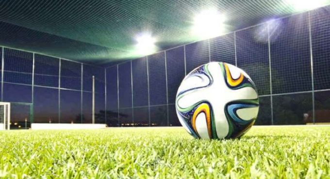

Treino de Luxo
As quadras do Centro de Convivência da Afresp em Jundiaí foram palco de um encontro de peso recentemente: os tenistas Carlos Nativo e Leo Belo foram vistos juntos em uma sessão de treino compartilhado. A movimentação chamou a atenção dos frequentadores, destacando não apenas o alto nível técnico em quadra, mas também o espírito de integração e a excelência das instalações esportivas da nossa sede, que seguem consolidando-se como um ponto de referência para a prática da modalidade na região.
Futebol de Terça: Esporte e Integração no Centro de Convivência

O tradicional futebol das terças-feiras no Centro de Convivência de Jundiaí segue a todo vapor, consolidando-se como um dos momentos de maior descontração e saúde para os nossos associados. Mais do que uma atividade física, os encontros semanais reforçam a amizade e o espírito de equipe em campo, proporcionando a pausa ideal no meio da semana para recarregar as energias.
Para fechar o ciclo com chave de ouro, o último encontro de cada mês conta com um churrasco especial de confraternização, garantindo que a resenha após a partida seja tão animada quanto o jogo. Quer entrar em campo com a gente? Os colegas interessados em participar das partidas ou obter mais informações sobre o grupo devem procurar o colega Fernando Frantz, no Posto Fiscal.